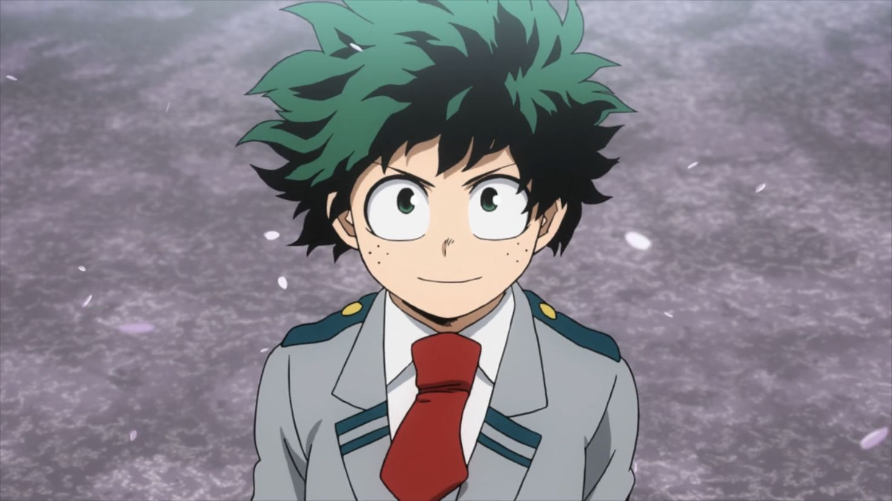
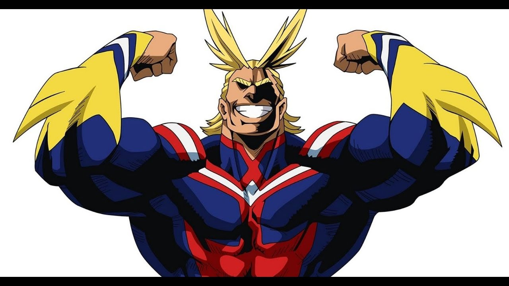

В мире «Моей геройской академии» около 80% населения обладают «причудами», по факту - сверхспособностями

Главный герой — Изуку Мидория. Мальчик родился без причуды в мире со сверхспособностями, и с детства мечтает стать героем.
В первой серии он встречает величайшего героя Японии и символ мира. Всемогущий видит потенциал мальчика и передает ему свою причуду – All for One.

Во время своего обучения, Мидория учится справляться с полученной силой, а его Академию Юэй, где он учится, регулярно атакуют злодеи
Всего в аниме 8 сезонов (или 170 серий) p>Лучший сайтдля просмотра аниме на английском